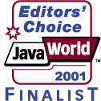

|
Log4j Project
Jakarta (parent project)
Translations
|
|
log4j version 1.1.3
|
Download version 1.1.3 including full source code,
class files and documentation in TAR.GZ format
or in ZIP
format. You may elect to browse log4j documentation online.
Version 1.1.3 is the 21st major public
release of log4j. It is backward compatible with log4j
version 1.0.x.
We also maintain a list of earlier
versions of log4j for download, intended for the curious
paleontologist.
|
|
|
log4j version 1.2 beta1
|
An alpha version of log4j 1.2 is now available in in TAR.GZ
format or in ZIP format.
Log4j version 1.2 is not feature-complete, nor is the
documentation up to date. Some previously deprecated APIs are
now removed. Moreover, users who have written sub-classes of
Category will need to modify their code. We have gone to great
lengths to ensure that version 1.2 is backward compatible with
earlier versions. Client source code writen for log4j 1.1.3
will compile without any problems using log4j version
1.2. Unfortunately however, the resulting class files are not
compatible. In other words, class files compiled will log4j
1.1.3 will not run with log4j version 1.2.
|
|
|
Third-party extensions
|
- Chainsaw
- Chainsaw is a GUI log viewer and filter for the Log4J
package. It listens for LoggingEvent
objects sent using the SocketAppender
and displays them in a table. Chainsaw also supports loading
events from files in the XMLLayout format.
- log4jME
- Log4jME, or log4j MicroEdition, is based on the
same code as log4j. However, as the name indicates the
micro-edition is much smaller. It offers the same client
interface such that code compiled for log4jME is 100%
compatible with log4j standard edition. You can choose to
upgrade to log4j standard edition at any time by replacing
log4jME.jar with log4j.jar in your
classpath.
- Lumbermill
- Lumbermill is a Swing(tm) log processing and distribution
system for Log4j.
- JDBCAppender
- A JDBCAppender by Thomas Fenner.
- LogFactor5
- A GUI appender (commercial).
-
Log Tag
- A custom log tag library from the Jakarta
Taglibs project.
- configLog4j
- A visual log4j configuration file editor by Tobias Dezulian.
- JINI logging service (registration required)
- A log4j wrapper for JINI Jerome Bernard.
|
|
|
Ports to other languages
|
- log4cpp
- A library of C++ classes for flexible logging to files, syslog, IDSA and
other destinations modeled after log4j by Bastiaan Bakker.
- log4cplus
- A competing port to C++.
- log4py
- Log4Py is a python logging module similar to log4j. It
supports logging to files or to stdout/stderr, variable
log-levels, configurable output formats and configuration via
configuration files. For an example output see the screenshot
below.
- log4p
- Another Python translation of log4j. This project no
longer seems to be maintained.
- log4c
- ANSI C functions and macros for flexible logging to files
and other destinations. It is modeled after the Log for Java
library (http://www.log4j.org), staying as close to their API
as is reasonable. Intended for use in time-space critical
environments.
- log4net
- The .NET implementation of the popular log4j Java API
providing flexible and arbitrarily granular control over log
management and configuration.
- log4r
- A Powerful Logger for Ruby.
Log4r features an extremely flexible logging library for
Ruby. Killer features include a heiarchial logging system
of any number of levels, logger inheritance, multiple
output destinations, tracing, custom formatting and more.
Log4r was inspired by log4j. Log4r provides the defining
features of log4j and some of its own features that just
might make log4j users envious.
- log4E
- The Goanna project (Eiffel Web Services) now includes
log4E, a complete port of log4j.
If you would like your software to be listed here, then send a note to the log4j-user@jakarta.apache.org
list.
|
|
|